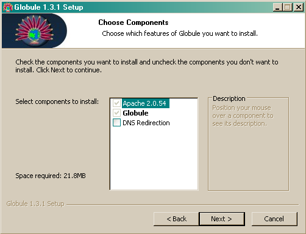
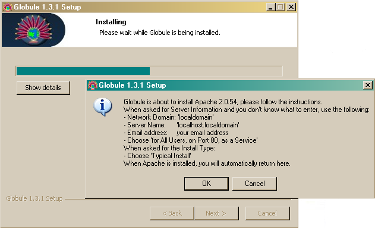
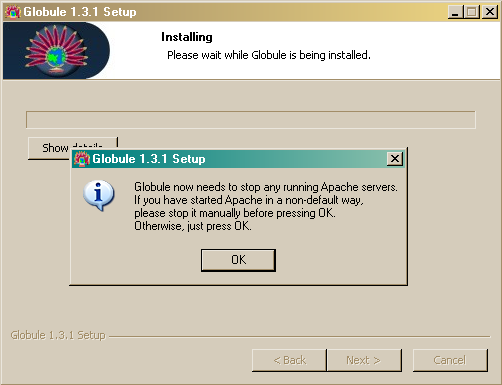
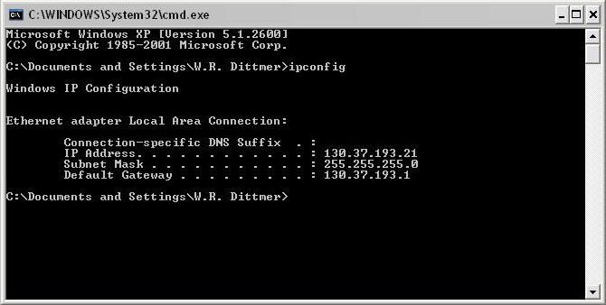
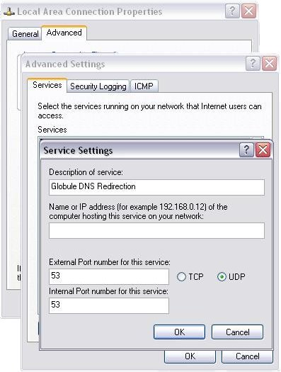

2 Globule InstallationGlobule adds replication functionality to the Apache web-server. There are multiple ways to install Globule, Apache and additional optional software. The normal installation procedure is the all-in-one package under Unix and Linux (see Section 2.1), or the Windows installer (see Section 2.2). In a number of special cases, it might be preferable to install Globule by other means, such as if you want to add replication features to an already existing Apache installation, you have a minimalistic system without compilers or you want to rely on installation paths or packaging methodology of your system. Section 2.3 explains how to install Globule by hand from source, while Section 2.4 explains how to install pre-compiled RPMs. Beware however that installing Globule by hand from sources or by using pre-compiled RPMs requires:
After having installed Globule, refer to section 3 on how to configure it. 2.1 Unix and Linux All-in-one installationThe all-in-one installation is a bundling of Globule and all the necessary third-party software which installs in a single run. This facilitates a standardized environment which works on a multitude of systems. The following software packages are included:
The copyright notices of these packages are included in Appendix A. To obtain maximum portability to different platforms and Linux distributions, the installer actually compiles the software packages from source. Installation therefore takes a bit of time, consumes some disk space and requires supporting software such as C and C++ compilers to be present. Modern systems should have sufficient amount of resources such that a default installation on a fully installed distribution can be done within an acceptable amount of time. Actual time and resource need will vary on your system, a typical fairly recent system requires between 5 and 15 minutes and between 100 and 250 MB of (temporary) disk space to install for a full installation. Downloaded the all-in-one installer from the web-site of Globule, and execute it as follows: wget 'http://www.globule.org/download/installer.sh' chmod u+x installer.sh sh ./installer.sh --keep-build The all-in-one installer will do the full installation automatically after you have confirmed certain settings which are probed by the installer. The end-result after the installation is a fully capable web-server, installed in an independent, private directory. You are free to choose this directory as long as it fits the following requirements:
Good alternatives for this directory are Other questions the installer asks are about checking the probed hostname of the system and whether or not to include MySQL support. The provided defaults should be correct. Including MySQL support is recommended, and can co-exist with a system-wide MySQL. Including MySQL support will install a database available only from the web-server, but takes a relatively long time to build. If you want to use a system-wide MySQL or do not need a database you can answer ``No'' to this question.
When the installer script has finished all files are installed in the target
directory that you specified. This directory is named the prefix or
base-directory. A transcript of the installation is written in
basedir/src/installer.log We advice you to remove the
installer script you just used, to avoid accidental re-use. After installation, you should use the globulectl script to start not just the Apache/Globule software, but also the accompanying software: basedir/bin/globulectl start At this time, the all-in-one installer will not automatically start the software when the computer is restarted. You can execute the following script: basedir/bin/globulectl installcrontab
to install a crontab, which is a periodic check whether the web-server is
running, looks really operational and has been restarted since the last time
the Once the installation is completed, your server will be ready to operate using a few example documents. To host your own documents, you will have to defined how and where to replicate (parts of) your web-server. Section 3 describes how to configure your web-server. The configuration of the web-server is stored for this all-in-one installer in the file basedir/etc/httpd.conf. Other configuration files are all located in that same directory. Upgrading your installationThe installer script can be used to upgrade the complete installation (including supporting software) at later times to the most recent release. To this end, when the installer script finishes, a modified copy of the installer script is created as basedir/src/installer.sh. This script, not the original, should be used to upgrade and should be run with the same flags as earlier.
If in the initial installation the flag Be aware however that during upgrading, the script will remove certain directories and files from the basedir. Only htdocs, htbin and directories with dots in them are kept untouched. Directories src, etc and var are largely kept as is. Other directories are removed. If you create additional directories to hold files of created VirtualHosts/web-sites and upgrade, they could be whiped out when you upgrade because this script will only keep certain directories. This is why directories with dots in them are never deleted, so you can use the domain name of the web-site as the directory name to use as DocumentRoot. To avoid data loss, always backup the whole installation before upgrading. Installer advanced usage and troubleshootingMost users do not need to read this section, and can safely move to section 3 on how to configure Globule. Prerequisite softwareThe installer script is very useful, even if your Linux distribution is RPM-package based. This because the installer script installs everything together in a single location with a standard set of features. However, since it is not tied to the specific distribution you are using, it does not check on the prerequisite software. Instead it bundles most necessary software within the installer. In very minimal setups however, such as supplied by ISPs where even compilers aren't installed, you might need to check whether the RPMs below are installed on your system.
Depending on your distribution, you might be able to check whether a package is installed using the command: rpm -q package-name Tuning of the installer operationIt is not encouraged to install the supporting software of Globule in a non-standard way, however if you do want to tune the installation, you can use the flag --extra-package-config=... to add additional options to how the ./configure script is run for a particular software packages, where package is one of httpd for Apache, php, globule, mysql, gd or webalizer. The following other options are user-available:
Lastly there are two other options which can be used only when upgrading, --omit-install allows you to prepare a new version without installing it. You should also use the --keep-build switch. This way you can keep the server running while compilation of a upgraded version takes place. Afterwards you can quickly upgrade a version by manually stop the Apache server using the globulectl command and running the same command, but now with the --omit-build switch. This minimizes down time for important systems. A typical usage would be: cd basedir ./src/installer.sh --keep-build --omit-install ./bin/globulectl stop ./src/installer.sh --keep-build --omit-build ./bin/globulectl start 2.2 Windows installation1. RequirementsThis explanation assumes that you are using Windows XP with SP2. If possible, please install Apache and Globule with administrator privileges. You will need to open ports in your firewall, and only Administrators can do that. 2. Run the automated installerThe Windows auto-installer for Globule is available as globule-1.3.1.exe. It contains a full distribution of Apache, so you don't need to install Apache separately. 3. Choose which components to install
4. Choose an install location for GlobuleThe default installation path is C:\Program Files\Globule if you install as administrator, or C:\Documents and Settings\<username>\Globule otherwise. You can change this path if you want Globule installed somewhere else. 5. Install ApacheIf Apache is not already present in your system, then it is going to be installed now.  Click on ``OK'' to start the Apache installer. You will see the following screens:
6. Where was Apache installed?If you installed Apache for Current User only, Globule will need to know where Apache was installed. Note that this is not the default way of installing Apache, but you know what you are doing, right? Specify the directory where the bin and modules directories are in, e.g. C:\Documents~and~Settings\<username>\Apache Group\Apache2. 7. Stop existing Apache servicesTo be able to install itself, Globule will need to stop the Apache server you just installed. If you installed Apache in the default way as described above, just press ``OK''. If you installed Apache yourself with a different service name (default is 'Apache2'), please stop the Apache service manually or by using the Apache Service Monitor. If you had Apache installed for Current User, press CTRL-C in the console window where you started Apache.  8. Installation CompletedCongratulations, all the software is installed. Now Globule needs to be configured to be able to use it. Click on ``Finish'' to go to a web-site which can help you write your configuration file. You can also manually edit the Apache configuration file in Apache's conf directory following instructions in section 3. When the installation itself has finished, you will be taken to this web-site to configure your web server when you you click ``OK''. If you kept the default paths unchanged and installed Globule as Admin, then your configuration file must be located at C:/Program Files/Apache Group/Apache2/conf/httpd.conf. If you installed as non-Admin, then it should be in C:\Documents and Settings\<username>\Apache Group\Apache2\conf\httpd.conf. You can start/stop your server using the Apache service icon on the bottom right of your screen. We recommend you use this service icon, which opens the Apache Monitor rather then the menu items. This because the menu items do not provide all functionality. 9. Configuring your firewallIf you are using Windows XP, then you must configure your firewall to allow your friends to access the server you just installed. Here is how to do it.


2.3 Source distribution
This section is intended for people with some experience in compiling
programs. Compilation from source allows you to make the best
match with your system, tune the installation and allows for special demands.
This is especially suited for package builders and somewhat experienced system
administrators. Before starting to build Globule from source you have to check the requirements and determine whether your installation needs to do DNS-based redirection. First determine if you might want to do DNS redirection. DNS redirection allows clients to be redirected at the DNS level to one of the available replica servers (see Section 3.3 for more information on HTTP vs. DNS redirection). This is the fastest, more distributed and most transparent redirection method available. It does however require Globule and Apache to act as an DNS server, which is only possible if you run a slightly modified Apache server, which requires recompiling Apache also. Other requirements:
You should also preferably install Apache from source. If you want to install Apache from RPMs and require DNS redirection then you must use our supplied RPMs which include the patch. If using RPMs not provided by us, make sure you also install the developer packages for Apache and APR (httpd-devel and apr-devel). Because Globule is a module for Apache, you should install Apache first, following the guidelines in the next section. 2.3.1 Apache installation from sourceApache can be set-up, configured and extended through modules in a multitude of fashions. These, even in an environment without Globule can clash, lead to security issues, or other issues. It is therefore prudent for us to give some advice on which configuration of Apache is known to work. Globule is also known to work with the Apache installation from the major Linux distributions.
To install Apache from source download Apache from: httpd-2.0.55.tar.gz Unpack the downloaded distribution: gzip -c -d < httpd-2.0.55.tar.gz | tar xvf - cd httpd-2.0.55 If you decided to enable DNS redirection in your server, then you need to patch your Apache source tree before configuring and compiling it. The patch file is distributed in the mod-globule-1.3.1.tar.gz Globule source package as file udp-requests-httpd-2.0.55.patch. Copy this file from the Globule archive into the Apache source tree and then execute: patch -p0 < udp-requests-httpd-2.0.55.patch Then configure and compile Apache according to the Apache documentation. The minimum you should specify is the --enable-so option to allow extension of Apache with modules. We however recommend the following sequence on the configuration script:
./configure --prefix=/usr/local/globule --enable-auth-anon=shared
--enable-auth-dbm=shared --enable-cache=shared --enable-file-cache=shared
--enable-disk-cache=shared --enable-mem-cache=shared --enable-example=shared
--enable-deflate=shared --enable-ssl --enable-proxy=shared
--enable-proxy-ftp=shared --enable-proxy-http=shared
--enable-proxy-connect=shared --enable-expires=shared --enable-headers
--enable-mime-magic --enable-http --disable-dav --enable-status=shared
--enable-asis=shared --enable-suexec=shared --enable-info=shared
--enable-cgi=shared --enable-include=shared --enable-vhost-alias=shared
--enable-rewrite=shared
Then call 2.3.2 Globule installation from sourceTo compile Globule from source after having installed Apache with optionally the DNS redirection patch you can use the compressed tar-archive available at: mod-globule-1.3.1.tar.gz Unpack this archive, and read the README, INSTALL and NEWS file for any last-minute release notes that may have been added: gzip -c -d < mod-globule-1.3.1.tar.gz | tar xvf - cd mod-globule-1.3.1
As usual, first call Alternatively to the --with-apache option, you can also use --with-apxs to specify the absolute path where the apxs program is installed. This file is usually located in the same directory as httpd and apachectl: ./configure --with-apxs=/weird/directory/bin/apxs If you want to use DNS redirection, then you must add the --enable-dns-redirection flag to configure: ./configure --with-apache=/usr/local/globule --enable-dns-redirection
We also recommend to use the Other options available are:
After running the ./configure script with the appropriate options,
run ``make'' and ``make install''. This last command will install the Globule
software and also install a sample Globule configuration file named
httpd-globule.conf next to the regular 2.3.3 PHP installation from sourceTo compile PHP yourself, you must make sure that you instruct PHP with the configure script to use the apxs2filter as the Apache to PHP hand-off and that safe mode is enabled. If you install Apache in a non-default path (using the --prefix option), make sure the PHP is actually configured to use the right installation of Apache. You should be very aware that the PHP pages will be executed on multiple servers. PHP is compiled with certain extensions depending on how it was configured. If you make your PHP pages depend on a certain set of extensions then all replica servers should have the same set of extensions. For this reason the all-in-one installer and Globule Broker System are preferred. The recommended configuration for compilation of PHP is:
./configure --prefix=$prefix --with-apxs2filter=prefix/bin/apxs --disable-cgi
--disable-static --enable-safe-mode --enable-dba --with-dbase --with-gdbm
--with-db4 --with-ini --with-flatfile --with-gd=... --enable-ftp
--with-mysql=... --with-mysqli=.../bin/mysql_config
Where prefix is the base installation path of Apache and ... are the paths to the individual software packages being referred to, which default to prefix for the use with the all-in-one installer.
When compiling and installing PHP, it will modify your existing
To add or check whether your PHP is available from within the Apache server, add the following directives at their proper position in the verb!httpd.conf!, or check whether all are inserted.
With these changes, and a restarted server, PHP support is made available to the Apache web server. 2.4 Installation from RPMs and alikesWe provide also alternative installation methods, which require more experience with the packages your Linux distribution uses.
When using a distribution package, such as the RPMs provided and described
here, you need to select which primary package is needed for your system.
Multiple different RPMs with actual the same software package have to be
provided for if you do want DNS redirection or not, where to install the
software the default location or one in Also the actual installation is scattered in different places (/var/www and /etc/httpd for instance), with which you have to be familiar. If you want to be able to use DNS redirection, you must use an Apache installation which has the DNS patch applied to it. Default RPM based distributions do not provide an RPM of Apache with this patch applied therefore you have to use one of our RPMs. To provide a full service, with up-to-date Apache web services with a configuration known to work we also provide RPMs for a plain, distribution system-like Apache installation.
If you are using a modern Unix or Linux distribution which uses or can use
RPMs, then you can install Globule from the RPMs as described within this
section. Alternate, less supported binary distributions are available for
Debian and another packed as a tarball. The latter distributions only provide
a basic installation without options such as DNS redirection. 1. RequirementsYou will need a recent Linux distribution (we usually test using recent Redhat Fedora or Mandrake distributions). If you have an older (e.g., RedHat 7.2) Linux version, then we strongly recommend that you upgrade. Alternatively, you can check in Section 6 if and how you can install Globule on your system. 2. Make up your mindAt this stage, you must decide whether you want to enable your server to perform DNS redirection (see Section 3.3 for more information on HTTP vs. DNS redirection). If you don't know what DNS redirection is or you don't own your own domain name, then probably you don't need DNS redirection at all. 3a. If you do not want DNS redirectionTo install Globule you need an recent up-to-date installation of Apache, which accept dynamic module loading. We provide also Apache RPMs which are known to work and are similar in functionality and construction as the official Apache RPMs by RedHat. We however keep more up-to-date and provide the right mix of modules and settings which co-operate with Globule. Because some platforms are lacking behind in the update of Apache module it is recommended that you uninstall any standard Apache RPM you may have, and install the RPMs we provide instead. rpm -e --nodeps apache httpd httpd-devel httpd-manual httpd-mmn rpm -ihv http://www.globule.org/download/apache-2.0.55/httpd-2.0.55-1.i386.rpm rpm -U http://www.globule.org/download/1.3.1/mod-globule-1.3.1-1.i386.rpm 3b. If you do want DNS redirectionEnabling DNS redirection requires that your Apache server can handle UDP requests. This is not a standard feature of Apache, so you must install the patched version we provide. First uninstall any Apache RPM you may have, then install our patched RPM (since this version is solely dedicated to working with Globule, we package the two of them together): rpm -e --nodeps apache httpd httpd-devel httpd-manual httpd-mmn rpm -U http://www.globule.org/download/1.3.1/globule-1.3.1-1.i386.rpm 4. Get startedOur RPMs will install Apache and Globule in the default RedHat installation paths. In particular, you should edit your configuration by opening file /etc/httpd/conf/httpd.conf with your favorite text editor. Please read Section 3.1 for basic configuration directives. An attractive way is to avoid composing and maintaining the httpd.conf configuration file is to use the Globule Broker System, which is an automated way to maintain the co-operative relationships between origin and replica servers and generate their httpd.conf configuration scripts automatically. You can start/stop your server with this command: /etc/rc.d/init.d/httpd [start|stop] 5. Installing Globule RPMs in non-standard directoriesIf you don't want to install your server in the standard RedHat paths (e.g., because you want to install Globule side-by-side to an existing Apache server), then you can use httpd-local-2.0.50-1.i386.rpm and mod-globule-local-1.3.1-1.i386.rpm instead of httpd-2.0.50-1.i386.rpm and mod-globule-1.3.1-1.i386.rpm. Apache and Globule will be installed in directory /usr/local/globule. Your configuration file will be found in /usr/local/globule/conf/httpd.conf. To start/stop your server you must use: /usr/local/globule/bin/apachectl [start|stop]globule@globule.org June 29, 2006 |